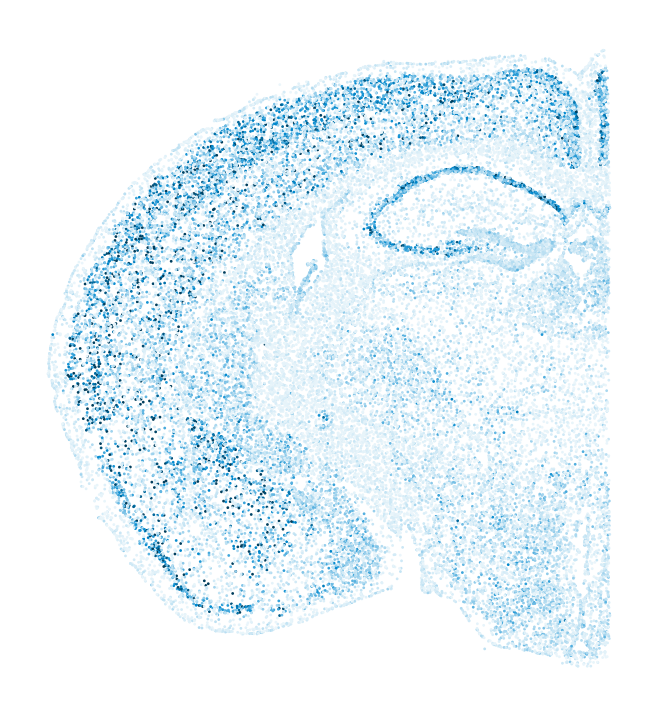
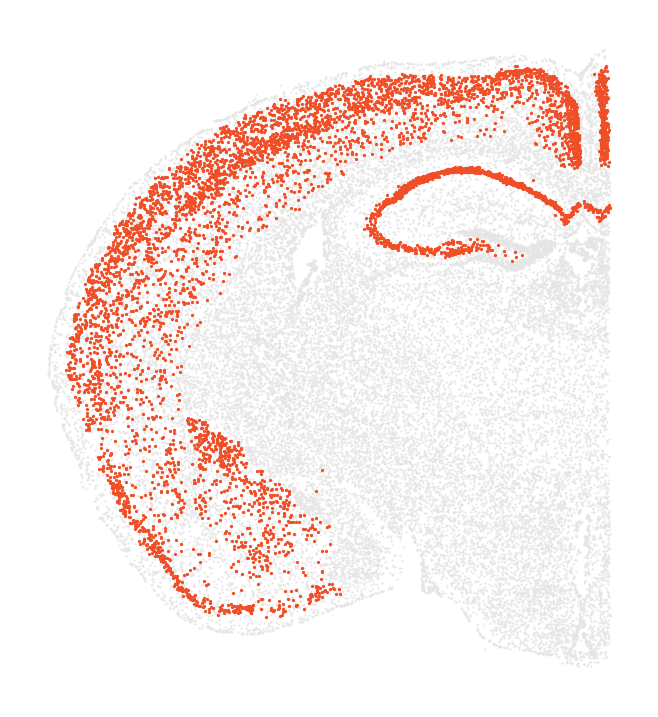
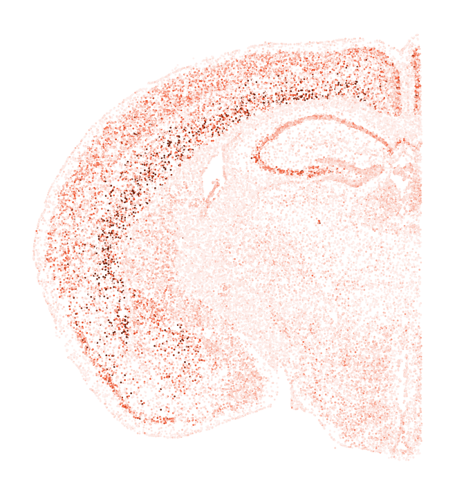

Tangram · what you get
One map, two products: cell-type maps and imputed genes
Data
SpaGE
Tangram
cell2location
Compare
1 · Cell types in space: add up M per cell type
Each row of M spreads one cell over the locations (the row sums to 1). Add the rows of all cells of one type: how many cells of that type the map puts at each location. Toy: three IT-ET cells put 0.6, 0.3 and 0.1 on one location → 1.0 IT-ET cell there.

Tangram: IT-ET neurons

MERFISH labels (orange)
Spearman ρ with the labels: 0.55 (IT-ET), 0.55 (OPC-Oligo).
2 · Any reference gene in space: Mᵀ × S
Predicted value at a location = sum over all cells of (share of the cell placed there × the cell's expression of the gene). Works for genes not on the panel. Toy: shares 0.6 and 0.4, expression 10 and 5 → 0.6 × 10 + 0.4 × 5 = 8.

Tangram: Tbr1 (not on panel)

SpaGE: Tbr1
Two different methods, similar pattern: reassuring, but not proof.